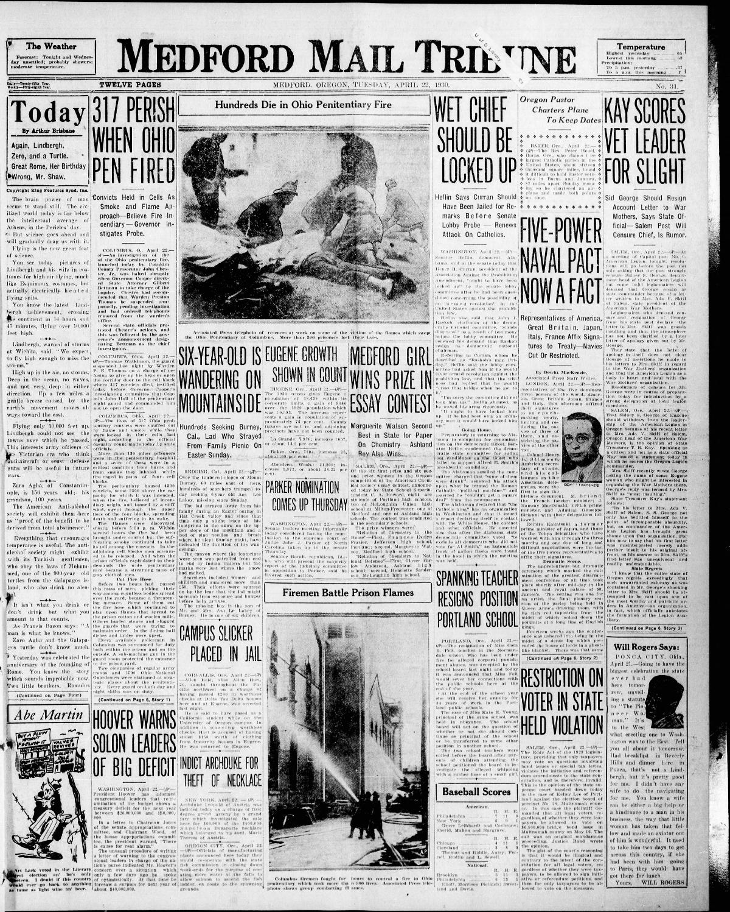
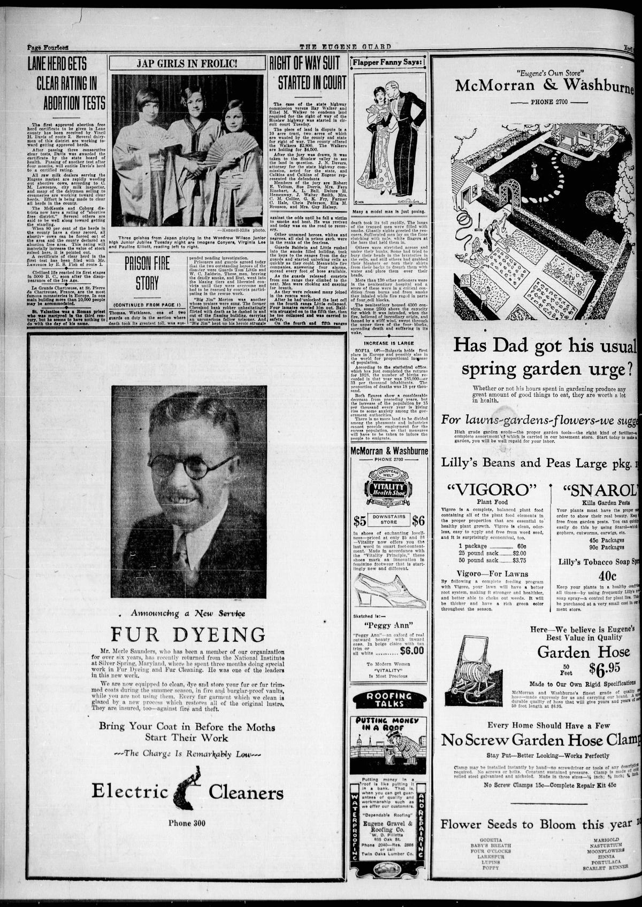

HN HN-466 · April 22, 1930 · Disasters, Accidents & Emergencies > Urban, Forest & Structural Fires > Building and venue fires
Source: Indianapolis Times, p. 1 — original page; Ohio History Connection account and victim records.
Report: The front page said 319 prisoners killed, with 150 feared dying, after fire swept the Ohio Penitentiary in Columbus on April 21. It described officials admitting a lack of specific emergency plans and confusion over cell keys and rescue.
Assessment: The Ohio History Connection documents 322 incarcerated people killed. The newspaper's 150 additional deaths were a fear, not a later-confirmed count. This was a documented prison disaster and institutional safety failure; the higher projection should not be added to the actual death toll.
Authentic images retrieved from Historic Oregon Newspapers (University of Oregon). Article crops are located using the archive's own OCR word coordinates and rendered at native crop resolution; article clips are assembled from the archive's own article-block images; page scans are reduced-size access renditions. No images were generated, mocked, or retouched.


Not yet acquired. Queued for provider-specific acquisition testing (see source-acquisition manifest).
URL (preserved verbatim): https://newspapers.library.in.gov/?a=d&d=IPT19300422.1.1
Saved research report: Historical_Newspaper_Event_Research_453-477_2026-10-23.md
Evidence note: A newspaper report means a historical publication made a claim; it does not establish that claim as fact. Contemporary reporting is separated from later scholarly context and our own assessment.